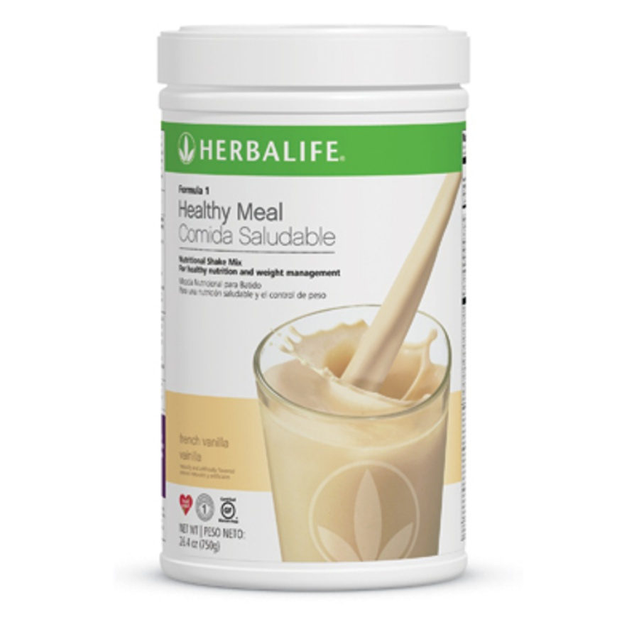

Volver al menú
Batido nutricional
El batido nutricional de herbalife permite alimentarnos con un bajo consumo de calorías.
Podemos probarlo en sabores como:
- - Canela
- - Piña colada
- - Cookies & Cream
- - Fresa
- - Chocolate
- - Vainilla
Contáctenos
Llámanos: 986 456 946
E-mail: e.cardozaq@gmail.com
E-mail: e.cardozaq@gmail.com
"Pregunta por tu descuento"